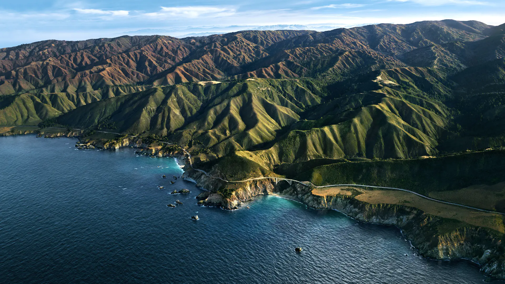
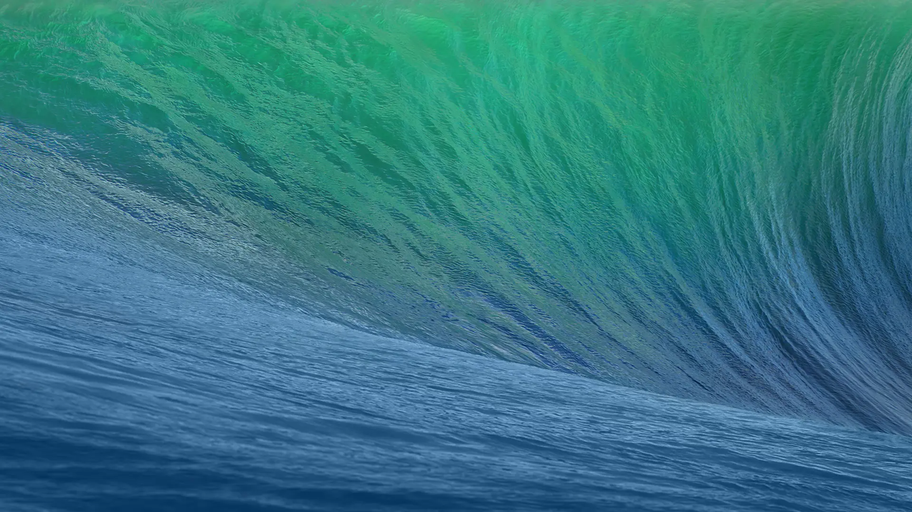

Sonoma
macOS Venturaの後継としてWWDC2023の基調講演にて2023年6月5日に発表。米カリフォルニア州のワイン産地のソノマ郡から命名された。

Ventura
macOS Montereyの後継として、2022年6月7日（日本時間）のWWDC 2022の基調講演で2022年秋にリリース予定と発表された。OSの名称は、カリフォルニア州ベンチュラ郡にあるサンブエナベンチュラという都市の通称のベンチュラに由来する。

Monterey
macOS Big Surの後継として、2021年6月7日のWWDC 2021の基調講演で同年秋にリリース予定と発表され[2]、同年10月25日より無償配布されている[3]。名前はカリフォルニア州モントレー郡にあるモントレーという町に由来する。
Big Sur
名前はカリフォルニア州セントラルコーストにある沿岸地域ビッグサーに由来する。バージョンナンバーは11となり、Mac OS X Public Beta以降の20年近く用いられてきたメジャーバージョンである10から変更された。
Catalina
macOS Mojaveの後継として、2019年6月3日のWWDC 2019の基調講演で発表され[1]、同年10月8日にリリースされた[2]。名前はカリフォルニア州ロサンゼルス沖に浮かぶサンタカタリナ島から付けられた。
Sierra
バージョンナンバーは10.12。OS X El Capitanの後継バージョンとして、2016年9月20日に無料でリリースされた[1]。
Mavericks
バージョンナンバーは10.9で、OS X Mountain Lionの後継バージョンとして2013年10月22日に無料でリリースされた。OS本体の最終セキュリティアップデートは、2016年7月18日にリリースされたセキュリティアップデート 2016-004[2]である。